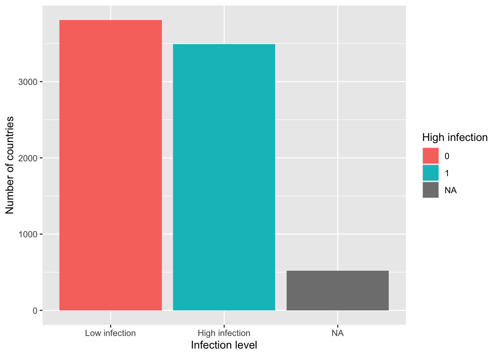
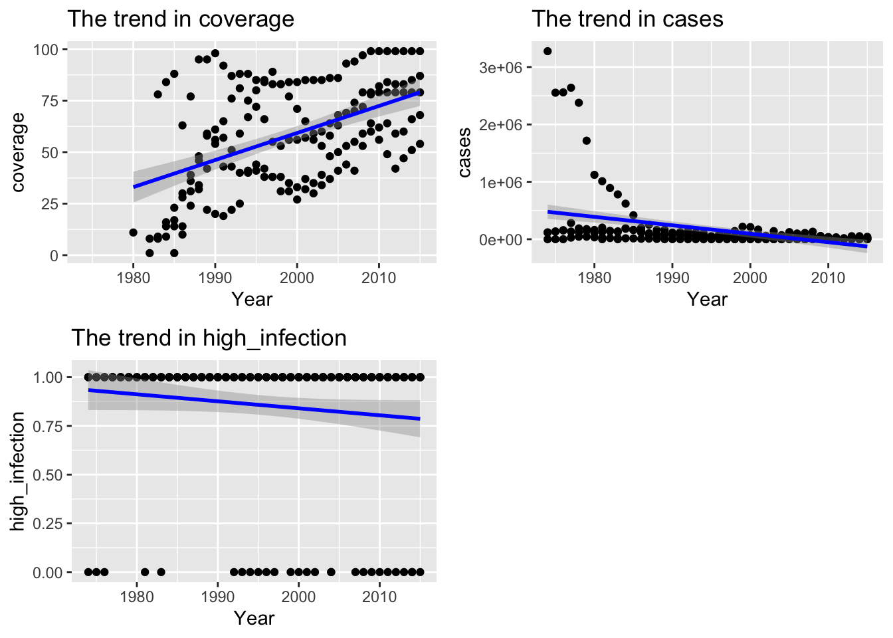
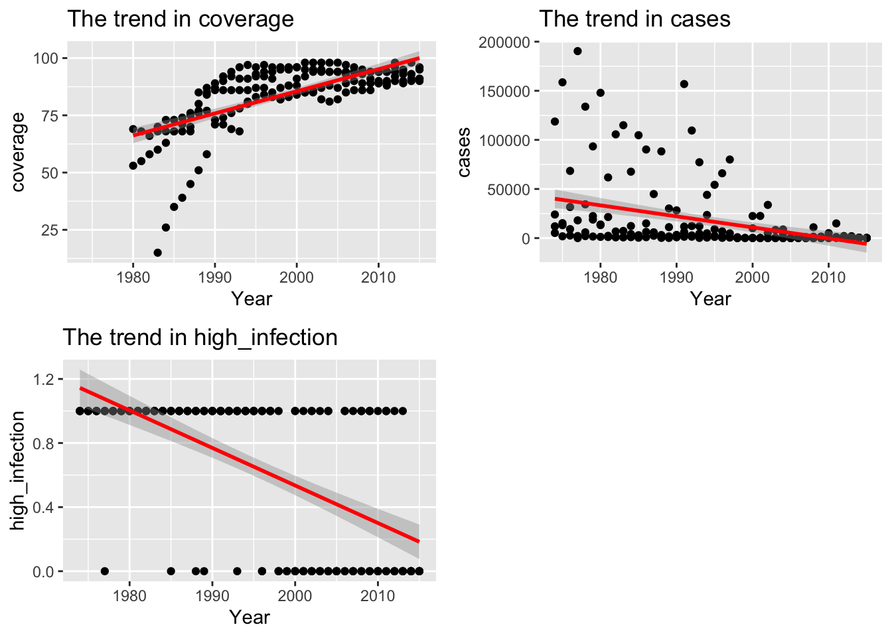

data <- read.csv("~/Documents/GitHub/Assignment_1/Vaccine Coverage and Disease Burden - WHO (2017).csv", header = TRUE)Assignment1_SOCS0100
Introduction
This report aims to examine the WHO (2017) data on MCV vaccine coverage and measles cases, in order to analyse the trends of public health in by countries and make comparisons between developed and developing countries.
It is crucial to consider statistics regarding both measles cases and MCV vaccine coverage when developing public health policies on a global scale. Furthermore, the examination of data on this disease is important for understanding the global distribution of vaccine inequality and the impact of measles, a highly contagious disease with severe health consequences, on global public health. Gaining insights on these aspects can very significant for social sciences research and informing public policies globally.
Data set Summary
This data set includes yearly statistics in different countries and regions regarding vaccine coverage and disease burden on 5 different vaccines (BCG, HepB3, Pol3, DTP3 and MCV).
Setups for this projec:
if (!require("pacman")) {
install.packages("pacman")
}Loading required package: pacmanpacman::p_load(
tidyverse,
kableExtra,
flextable,
skimr,
glue,
palmerpenguins
) Data Wrangling
- Statistics regarding measles and the MCV vaccine are selected to create a new data frame. Renaming the variables are helpful for future analysis in this report as it offers more concise and accessible indications.
df <- data %>% select(Entity, Year, Measles..MCV..immunization.coverage.among.1.year.olds..WHO.2017., Number.of.confirmed.measles.cases..WHO.2017.) %>%
rename(coverage = Measles..MCV..immunization.coverage.among.1.year.olds..WHO.2017., cases = Number.of.confirmed.measles.cases..WHO.2017.,
country = Entity)- A binary variable is created to indicate the level of infection in countries with over 500 confirmed cases, categorising these countries as high infection (1) or low infection (0). This provides a comprehensive overview of the number of countries that continued to experience a significant burden of measles cases, underscoring the existence of potential inequality in vaccine access and coverage across the globe. It can be observed that the global coverage is approximately 77%, with a relatively low infection level (below 0.5), which may indicate the efficacy of the vaccine.
df <- df %>% mutate(high_infection = ifelse(cases > 500, 1, 0))
df %>%
select(-country, -Year) %>%
map_dbl(mean, na.rm = TRUE) coverage cases high_infection
7.688228e+01 2.367508e+04 4.782192e-01 - The data frame is reshaped into a wide format, indicating the extent of vaccine coverage and the number of confirmed cases in each year in a range of countries and regions. This allows for a more comprehensive understanding of the global progress of vaccination.
df_1 <- df%>%
pivot_wider(
names_from = Year,
values_from = c(coverage, cases, high_infection)
)Data Processing and Visualisation
- Top 10 Tables by Averages
In order to gain a deeper understanding of the extent of vaccination coverage and the cases of measles in different countries, two tables have been created. The first presents the ten countries with the highest average vaccination coverage, while the second displays the ten countries with the highest number of confirmed cases. It is noteworthy that regions within the data set have been excluded in order to focus on countries. Additionally, a function is also created to simplified the process of generating tables.
This section has been enhanced by ChatGPT, which initially failed to generate the tables immediately after running the codes. ChatGPT has recommended the inclusion of the print() function to address this issue. ChatGPT has also suggested to simplified the process by creating a table generation function, so that the initially code of generating two tables one by one was replaced by this new function.
generate_top_10_table <- function(df, metric, top_n = 10, caption_text) {
df %>%
filter(!country %in% c("World", "Africa", "Western Pacific", "Europe", "South-East Asia", "Eastern Mediterranean")) %>%
group_by(country) %>%
summarise(
avg_coverage = mean(coverage, na.rm = TRUE),
avg_cases = mean(cases, na.rm = TRUE)
) %>%
arrange(desc(.data[[metric]])) %>%
head(top_n) %>%
kable(caption = caption_text) %>%
kable_styling("striped") %>%
kable_classic(full_width = FALSE)
}
top_10_coverage <- print(generate_top_10_table(df, "avg_coverage", 10, "Top 10 countries by average vaccine coverage"))<table class="table table-striped lightable-classic" style='margin-left: auto; margin-right: auto; font-family: "Arial Narrow", "Source Sans Pro", sans-serif; width: auto !important; margin-left: auto; margin-right: auto;'>
<caption>Top 10 countries by average vaccine coverage</caption>
<thead>
<tr>
<th style="text-align:left;"> country </th>
<th style="text-align:right;"> avg_coverage </th>
<th style="text-align:right;"> avg_cases </th>
</tr>
</thead>
<tbody>
<tr>
<td style="text-align:left;"> Hungary </td>
<td style="text-align:right;"> 99.00000 </td>
<td style="text-align:right;"> 1566.70732 </td>
</tr>
<tr>
<td style="text-align:left;"> Monaco </td>
<td style="text-align:right;"> 98.92857 </td>
<td style="text-align:right;"> 12.64286 </td>
</tr>
<tr>
<td style="text-align:left;"> Slovakia </td>
<td style="text-align:right;"> 98.36364 </td>
<td style="text-align:right;"> 92.65385 </td>
</tr>
<tr>
<td style="text-align:left;"> Belarus </td>
<td style="text-align:right;"> 97.87500 </td>
<td style="text-align:right;"> 450.23077 </td>
</tr>
<tr>
<td style="text-align:left;"> Kyrgyzstan </td>
<td style="text-align:right;"> 97.45833 </td>
<td style="text-align:right;"> 1103.30769 </td>
</tr>
<tr>
<td style="text-align:left;"> Czech Republic </td>
<td style="text-align:right;"> 97.39130 </td>
<td style="text-align:right;"> 158.26923 </td>
</tr>
<tr>
<td style="text-align:left;"> Kazakhstan </td>
<td style="text-align:right;"> 97.12500 </td>
<td style="text-align:right;"> 1201.30769 </td>
</tr>
<tr>
<td style="text-align:left;"> Saint Kitts and Nevis </td>
<td style="text-align:right;"> 96.15625 </td>
<td style="text-align:right;"> 52.35000 </td>
</tr>
<tr>
<td style="text-align:left;"> Poland </td>
<td style="text-align:right;"> 95.97222 </td>
<td style="text-align:right;"> 19934.89474 </td>
</tr>
<tr>
<td style="text-align:left;"> Andorra </td>
<td style="text-align:right;"> 95.84211 </td>
<td style="text-align:right;"> 0.93750 </td>
</tr>
</tbody>
</table>top_10_cases <- print(generate_top_10_table(df, "avg_cases", 10, "Top 10 countries by average confirmed cases"))<table class="table table-striped lightable-classic" style='margin-left: auto; margin-right: auto; font-family: "Arial Narrow", "Source Sans Pro", sans-serif; width: auto !important; margin-left: auto; margin-right: auto;'>
<caption>Top 10 countries by average confirmed cases</caption>
<thead>
<tr>
<th style="text-align:left;"> country </th>
<th style="text-align:right;"> avg_coverage </th>
<th style="text-align:right;"> avg_cases </th>
</tr>
</thead>
<tbody>
<tr>
<td style="text-align:left;"> China </td>
<td style="text-align:right;"> 88.33333 </td>
<td style="text-align:right;"> 532562.55 </td>
</tr>
<tr>
<td style="text-align:left;"> Nigeria </td>
<td style="text-align:right;"> 41.59375 </td>
<td style="text-align:right;"> 94845.45 </td>
</tr>
<tr>
<td style="text-align:left;"> India </td>
<td style="text-align:right;"> 59.38710 </td>
<td style="text-align:right;"> 86960.67 </td>
</tr>
<tr>
<td style="text-align:left;"> Americas </td>
<td style="text-align:right;"> 83.11111 </td>
<td style="text-align:right;"> 69489.75 </td>
</tr>
<tr>
<td style="text-align:left;"> Malawi </td>
<td style="text-align:right;"> 79.27778 </td>
<td style="text-align:right;"> 54858.26 </td>
</tr>
<tr>
<td style="text-align:left;"> Spain </td>
<td style="text-align:right;"> 86.40000 </td>
<td style="text-align:right;"> 51522.71 </td>
</tr>
<tr>
<td style="text-align:left;"> Kenya </td>
<td style="text-align:right;"> 77.93750 </td>
<td style="text-align:right;"> 47059.88 </td>
</tr>
<tr>
<td style="text-align:left;"> United Kingdom </td>
<td style="text-align:right;"> 82.41667 </td>
<td style="text-align:right;"> 42428.68 </td>
</tr>
<tr>
<td style="text-align:left;"> Ghana </td>
<td style="text-align:right;"> 66.69444 </td>
<td style="text-align:right;"> 35028.10 </td>
</tr>
<tr>
<td style="text-align:left;"> Madagascar </td>
<td style="text-align:right;"> 53.50000 </td>
<td style="text-align:right;"> 34667.41 </td>
</tr>
</tbody>
</table>- Bar Plot Showing Infection Level
Understading the difference in infection level in different countries is important in addressing the issue of global health inequality. Hence, a bar chart is created to illustrate the number of countries with high infection level and low infection level.
This section has also been refined by ChatGPT, with a cleaner and shorter code, scale_x_discrete, for the creation of the plot.
It could be seen that although there are more countries with lower infection level, the inequality on health is not significant.
ggplot(df, aes(x = factor(high_infection), fill = factor(high_infection))) +
geom_bar() +
scale_x_discrete(labels = c("0" = "Low infection", "1" = "High infection")) +
labs(x = "Infection level", y = "Number of countries", fill = "High infection")
- Trends Comparison Between Developing and Developed Countries
In order to gain a better overview of the inequality of vaccine coverage, measles cases, and infection levels between countries with better resources and those that are less well-resourced, graphs have been constructed to facilitate comparison between developing and developed countries.
Here, 5 countries are selected for developing countries. The plot with a line showing the trends of the 3 aspects are plotted with a function. This part is proofread by ChatGPT for a mistype in the code names().
filtered_df_1 <- df %>% filter(country %in% c("Afghanistan", "China", "India", "Nigeria", "Lebanon"))
create_point_plot_1 <- function(i) {
filtered_df_1 %>%
ggplot(aes_string(x = names(filtered_df_1) [2], y = names(filtered_df_1) [i])) +
geom_point() +
geom_smooth(method = "lm", se = TRUE, color = "blue") +
labs(
title = glue ("The trend in {names(df) [i]}"),
y = glue("{names(df)[i]}")
)
}
plots_list <- map(3:ncol(filtered_df_1), create_point_plot_1)Warning: `aes_string()` was deprecated in ggplot2 3.0.0.
ℹ Please use tidy evaluation idioms with `aes()`.
ℹ See also `vignette("ggplot2-in-packages")` for more information.plots_grid <- gridExtra::grid.arrange(grobs = plots_list, ncol = 2)`geom_smooth()` using formula = 'y ~ x'Warning: Removed 39 rows containing non-finite outside the scale range
(`stat_smooth()`).Warning: Removed 39 rows containing missing values or values outside the scale range
(`geom_point()`).`geom_smooth()` using formula = 'y ~ x'Warning: Removed 16 rows containing non-finite outside the scale range
(`stat_smooth()`).Warning: Removed 16 rows containing missing values or values outside the scale range
(`geom_point()`).`geom_smooth()` using formula = 'y ~ x'Warning: Removed 16 rows containing non-finite outside the scale range
(`stat_smooth()`).
Removed 16 rows containing missing values or values outside the scale range
(`geom_point()`).
Similar process has been done for 5 developed countries.
filtered_df_2 <- df %>% filter(country %in% c("United Kingdom", "Canada", "Japan", "France","Australia"))
create_point_plot_2 <- function(i) {
filtered_df_2 %>%
ggplot(aes_string(x = names(filtered_df_2) [2], y = names(filtered_df_2) [i])) +
geom_point() +
geom_smooth(method = "lm", se = TRUE, color = "red") +
labs(
title = glue ("The trend in {names(df) [i]}"),
y = glue("{names(df) [i]}")
)
}
plots_list <- map(3:ncol(filtered_df_2), create_point_plot_2)
plots_grid <- gridExtra::grid.arrange(grobs = plots_list, ncol = 2)`geom_smooth()` using formula = 'y ~ x'Warning: Removed 43 rows containing non-finite outside the scale range
(`stat_smooth()`).Warning: Removed 43 rows containing missing values or values outside the scale range
(`geom_point()`).`geom_smooth()` using formula = 'y ~ x'Warning: Removed 32 rows containing non-finite outside the scale range
(`stat_smooth()`).Warning: Removed 32 rows containing missing values or values outside the scale range
(`geom_point()`).`geom_smooth()` using formula = 'y ~ x'Warning: Removed 32 rows containing non-finite outside the scale range
(`stat_smooth()`).
Removed 32 rows containing missing values or values outside the scale range
(`geom_point()`).
It could be seen from the 2 plots that, for developing countries, the line indicating trends in coverage starts at a lower point and ends at a lower point compared to developed countries. It shows that there is lower coverage due to the differences in resources. Moreover, the gradient of the line for the trend in cases for developed countries is higher than that for developing countries, suggesting that health inequality is created due to inequality in vaccine coverage. Finally, developed countries have lower levels of measles infection.
Critical Engagement With AI
As previously stated, ChatGPT is used for proofreading and suggesting refinements to the codes. ChatGPT is a valuable tool for proofreading and identifying minor errors in codes, as well as offering constructive suggestions for alternative, more concise and straightforward code formats. ChatGPT enhanced my approach on data visualisation and processing.
However, ChatGPT also makes mistakes while giving suggestions, for example, when suggesting a refinement on my data visualisation initially, it failed to put an argument in print(). Hence, it shows that not all suggestions from ChatGPT is correct, therefore it is important to keep a critical thinking whilst engaging with it.
Overall, ChatGPT does provide useful advice for this report.